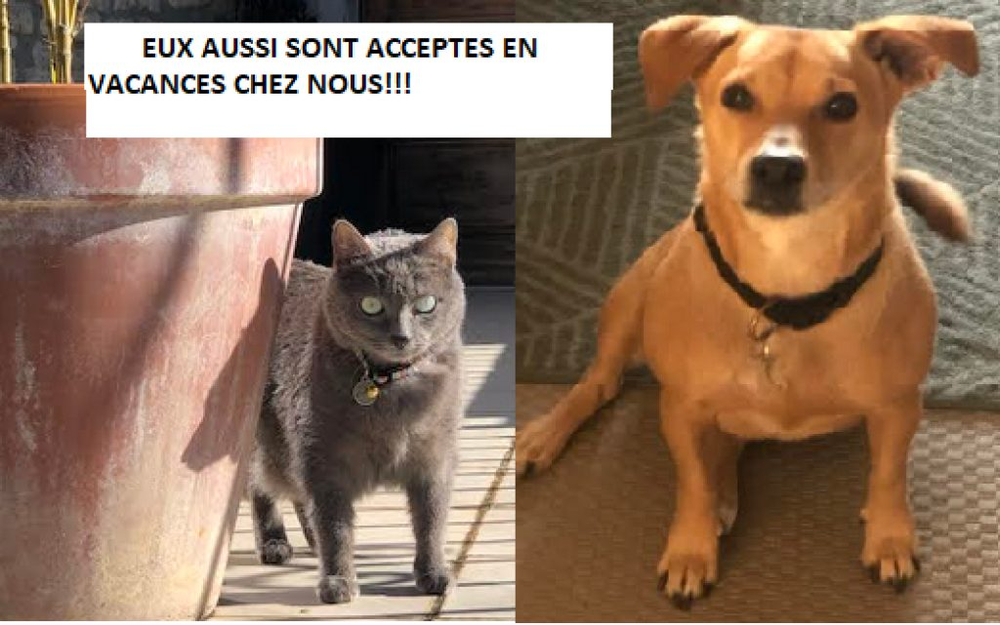
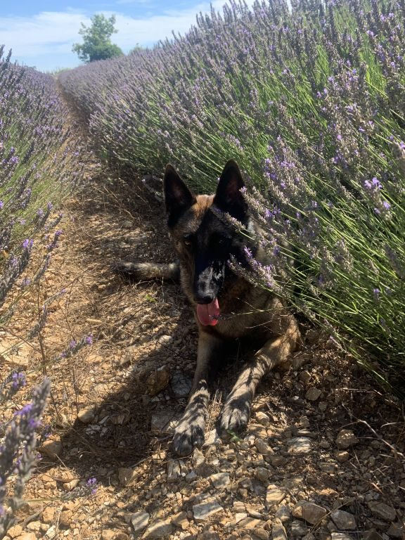
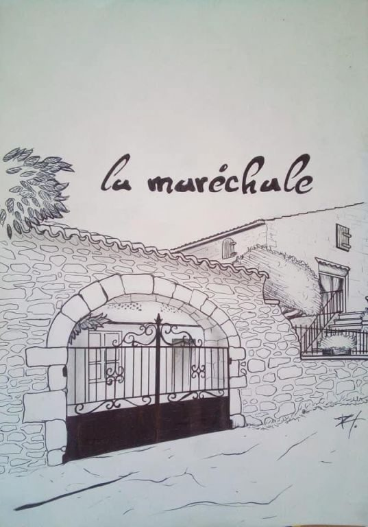

Accueil · Le mas
Le mas, la piscine et les vignes
Une bâtisse authentique en pierre, au cœur d’une propriété de plusieurs hectares, à deux minutes du village.


9 mètres sur 4, face aux vignes
La piscine fait 9 mètres de long sur 4 de large, de 70 centimètres à 1,70 mètre de profondeur : les petits ont pied, les grands nagent. Elle est remplie pour les mois de juillet et d’août.
Elle est clôturée et aménagée de coins transats, un pour chaque gîte. Autour, les vignes de la famille et la garrigue.


La cour, la salle de jeux et les vélos
La cour est fermée : les enfants y jouent et font du vélo pendant que les parents lisent sur la terrasse. La salle de jeux a sa table de ping-pong et son baby-foot.
Sous les arbres, le terrain de boules attend l’apéritif du soir.
Ce que le mas vous offre



Eux aussi sont en vacances
Les animaux sont bienvenus et gratuits : deux au plus par appartement, chiens non catégorisés, sur demande et avec l’accord de Nathalie.
Autour du mas, les chemins entre les vignes et la lavande sont parfaits pour la promenade du matin.



Simple, accueillant et familial
« Nous aimons recevoir dans cet endroit certes un peu rustique mais surtout authentique. » La famille Duffes, propriétaires et agriculteurs, a rénové le mas en grande partie elle-même, avec des artisans locaux qui respectent le bâti ancien.
Nathalie s’occupe de la maison et des locations ; Christel s’occupe des vignes et des arbres fruitiers avec ses fils. Les panneaux solaires chauffent l’eau : chacun est invité à suivre la même démarche écoresponsable.
Le mas au fil de l’été
Choisissez votre gîte
 1er étage
1er étageLe Micocoulier
Un séjour de 26 m² et une double terrasse sous la vigne vierge.
 1er étage
1er étageLa Magnanerie
L’accès direct à la cour fermée, où les enfants jouent en toute liberté.
 1er étage
1er étageChez Mémé
Deux entrées indépendantes et une terrasse de 18 m² avec son store.
 2e étage
2e étageLe Bellevue
Sous les toits, plein sud, avec la vue sur la piscine et la campagne.